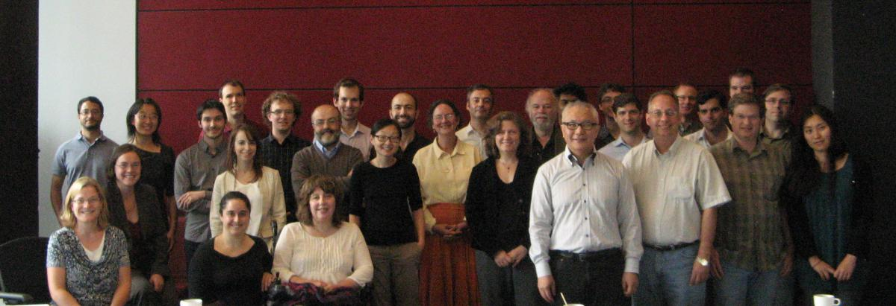

CIRMMT Workshop, September 7th, 2013, Part I : Introduction
Posted by Catherine Motuz on September 12, 2013
Last Saturday, the DDMAL Lab hosted a workshop outlining the many dimensions of the ever-expanding SIMSSA project. The morning began with prof. Ichiro Fujinaga extending a warm welcome to all participants, stating that this workshop represents the 5th or so in a series, and is being held partially in preparation for an upcoming grant application due October 1st.
Ichiro Fujinaga: Introduction
As an introduction to SIMSSA for those new to the project, Ichiro gave his elevator pitch: “SIMSSA is Google Scores, minus Google,” going on to clarify that this doesn’t mean that Google will never be involved, but simply that they aren’t as the project presently exists. The many dimensions of SIMSSA involve developing and improving systems for Optical Music Recognition (OMR), learning how to construct sophisticated queries on musical documents, and amassing OMR, musical texts, and search & analysis tools onto a single website. A tangential dimension which will eventually be very valuable involves trawling the web to find musical scores in books that have already been scanned—a dimension which involves the HathiTrust’s collection of 2.6 digitized books as well as sources such as Early English Books Online.
Ichiro stressed that SIMSSA is a toolkit—we provide tools (“we are the Home Depot™ of music search and analysis”) but we don’t upload pieces or perform OMR, queries or analysis. Presently, SIMSSA is working intensively on developing web-based OMR through Rodan—more of which was said later—using existing OMR systems such as Gamera and Aruspix. Editing—also accessible through Rodan—involves the web-based editor, Neon.js, and the open-source MuseScore. MEI provides the language and framework for the detailed music encoding that the project requires, while the continuously improved Diva.js provides a way to display high resolution facsimiles. All of these aspects were discussed in future sessions throughout the day (see below).
Ichiro went on to mention that a web-based approach allows for crowdsourcing music editions (or when experts are needed, “gradsourcing”). While eventually the project will encompass all kinds of notated music, we are presently focusing on Early Music, because it is not being done in the private sector—OMR on 16th-century square notation will never be a commercially viable enterprise.
What may not be commercially viable is nevertheless worthwhile, however, and the SIMSSA project already received $200K in a partnership development grant spanning from 2011-2014. Having developed numerous partnerships with libraries, institutions, academics and programmers (as shown in a list on the screen), we are now preparing a partnership grant application which would see the project through another seven years. The Letter of Intent for this grant was submitted in February and passed in June, ranked sixth out of eighty-six applicants. While this preliminary result is encouraging, we need to keep up the hard work to give the grant proper our best shot.

Standing (Left to Right): [Unknown Guest], Wei Gao, Jamie Klassen, Cory McKay, Audrey Laplante, Christopher Antila, Giuseppe Gerbino, Timothy Wilfong, Rene Rusch, Alexander Morgan, Julie Cumming, Gabriel Vigliensoni, Jennifer Bain, Jean-Pierre Noiseux, Deepanjan Roy, Ichiro Fujinaga, Laurier Baribeau, Mitchell Brodsky, Perry Roland, Laurent Pugin, Ryan Bannon, Andrew Hankinson, Craig Sapp, Daniel Donnely, Reiko Yamada; Sitting: Debra Lacoste, Kate Helsen, Catherine Motuz, Rachelle Taylor.